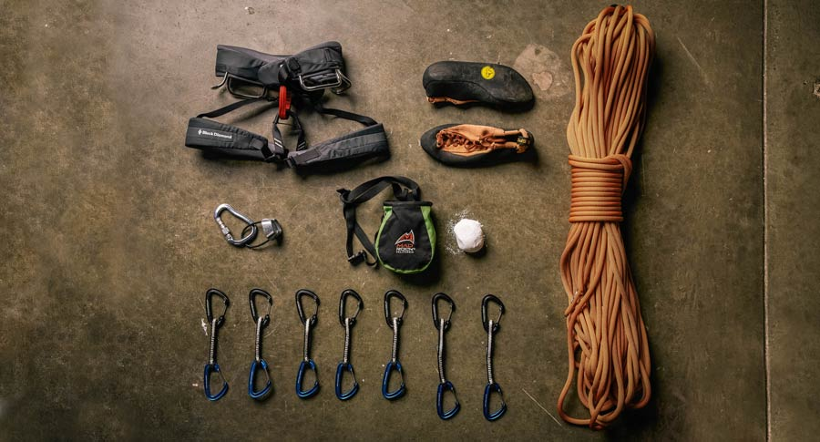

What gear do I need for Sport Climbing?
The list of gear needed for sport climbing really depends on what climb you’re doing. Every single climb is different and may require different amounts of gear of different types of gear, but this list will help you have a basic sport climbing rack that will give you a very good base to do most climbs. All this gear will be what is needed to complete a sport climb and set up a top rope on that sport climb.
Every individual climber needs to have a harness, helmet, pair of climbing shoes, chalk bag, personal anchor system (PAS), and a belay device. When choosing harnesses, helmets, climbing shoes, and chalk bags it all is personal preference. Basic things that they all should have are CE and UIAA certifications. This means they are certified pieces of climbing gear from reputable brands that have undergone the required tests and treatment of the gear for them to be safe and usable. Keep in mind that when buying gear, you should ALWAYS buy gear new and unused unless it is non load bearing equipment such as chalk bags, shoes, etc. All other gear should be bought brand new or at the very least have a known knowledge of how that gear has been used and treated so it isn't compromised in any way. Personal Anchor Systems (PAS) are specially designed tethers that a climber attaches to their harness to be able to fix themselves directly into an anchor or protection piece when they need to stop at an anchor or have reached the top of the climb. There are many kinds of belay devices. This site will teach you how to use the most basic kind called an ATC which is a device that can be used to belay a climber and rappel with.
Every pair of climbers needs to have this equipment between the two of them to complete most sport climbs: 1 dynamic climbing rope 60-80 meters in length, 10-12 quickdraws, 1 dyneema climbing sling 240 cm in length, and 5 locking carabiners. The amounts of these items, different lengths, and different kinds of gear could be needed depending on the climb, but with this gear a pair of climbers could climb an average sport climb and set up a top rope on it. All the same rules apply for this gear as they should all have CE and UIAA certifications and be bought from reputable brands. Also never buy any of this gear used as it is all load bearing and use dependent gear.
There are so many factors and specifications that go into choosing a sport climbing rack of gear that we have not covered here that could come into play, but with this basic knowledge one could start off with a decent rack of gear. For more specific information on sport climbing and sport climbing gear visit this article by REI.
More on Sport ClimbingAll this gear can be bought online or in person from many different stores. A quick google search can help you find where to buy and where to go. My preference is REI due to their reliability and reputation but there are many stores to choose from.
REI WebsiteHow to Use my Gear

When learning to use climbing gear it is very important to practice before going to climb and use it all for the first time. Practice at home in the living room or wherever all the knots and systems you need to know to keep you and your partner safe while climbing. Know how to use your gear! We are going to go over basic systems and concepts of using the gear while climbing but to fully learn someone must have hands on experience. Find someone at a local climbing gym who is willing to teach you or a friend who is experienced. YouTube and other visual sources are also very essential and effective in learning. This site will provide very brief overviews and not in-depth training.
When at the base of the climb (we will talk about where to find climbs on the safety page) put on helmets, harnesses, and shoes and double check your partner to make sure it is all put on correctly. Next choose who will be leading the route and rack all the quickdraws, carabiners, and slings onto their harness double checking that all the gear they will need is with them. Next flake out the rope and have the lead climber put the rope into their harness using a follow through figure 8 knot, double check the know is tied correctly and through the tie in loops on the harness. Next the partner who is not climbing first must put the lead climber on belay using their belay device, make sure the belay device is threaded correctly and the carabiner is locked. Then the leader may start climbing making sure to follow and clip all the bolts on the climb making sure the quickdraws aren’t back clipped. Follow all necessary verbal communication with your partner making sure when the belayer knows when you’re clipping so they can give proper amount of slack and be ready to catch your fall. Once the climber is at the top of the climb clip into the fixed anchors with your PAS.
When at the top examine the anchor and see what you have to work with. Chains? Rappel rings? Lower hooks? Know how to use each and build your anchor on each. Build your top rope anchor using the 240 cm sling and 4 locking carabiners. Clip the rope into the anchor and lock all carabiners. Then have the belayer take all slack and come off your PAS and be lowered to the ground by the belayer. The sport climb has now been led and a top rope is set up for your partner to climb. Switch roles and have your partner climb as you belay and when they get to the top, they can clean your gear off the anchor and lower off the permanent anchor at the top.
For more information on specifics on each piece of gear and how to use them watch YouTube videos and learn from experienced individuals in person.